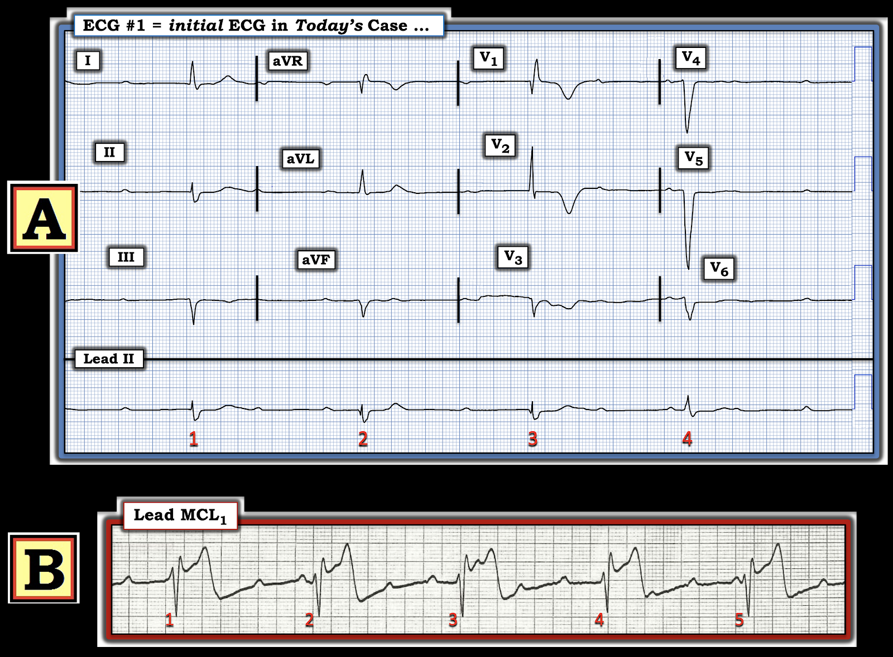
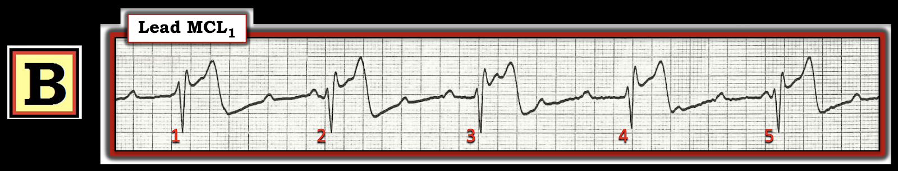
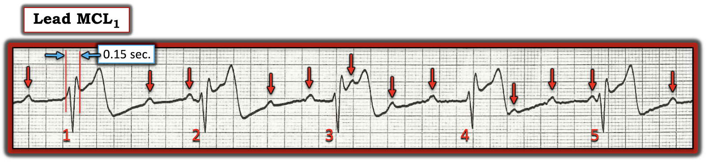
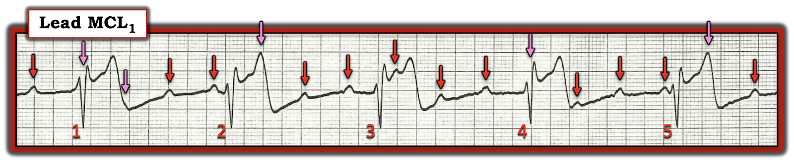
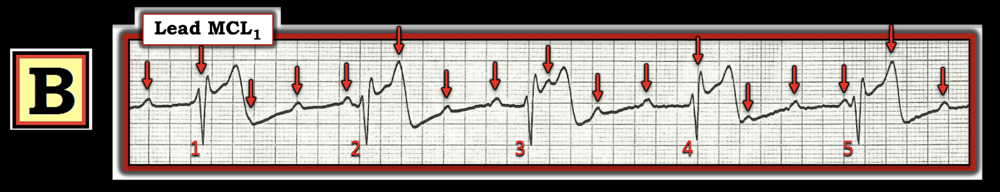
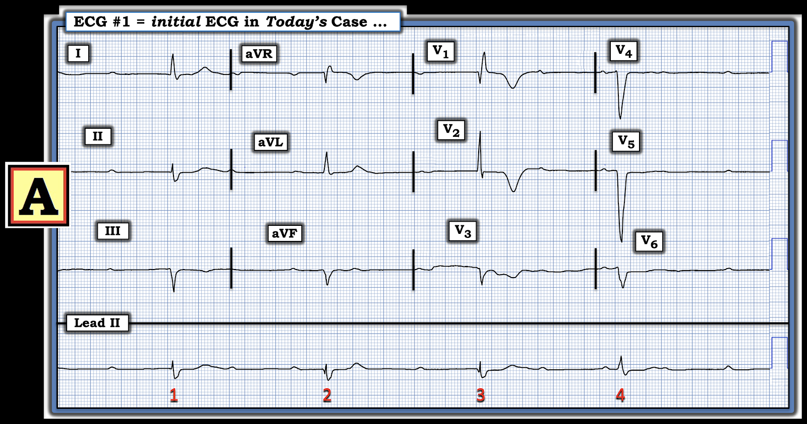
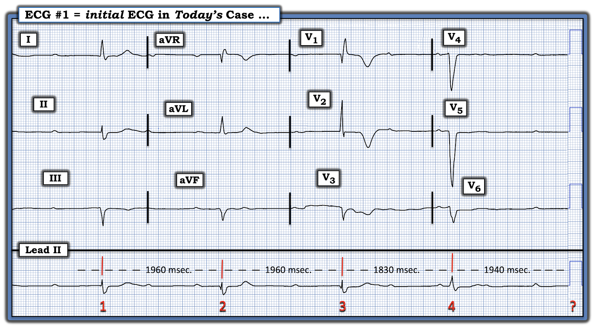
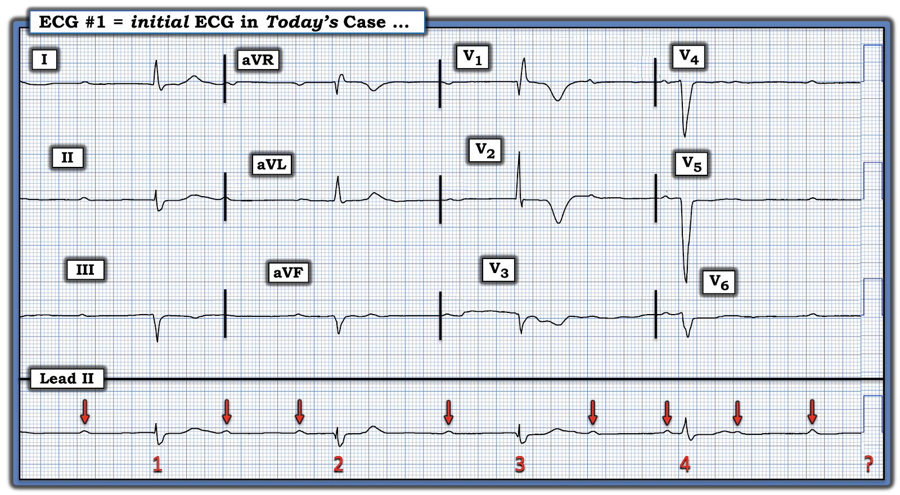
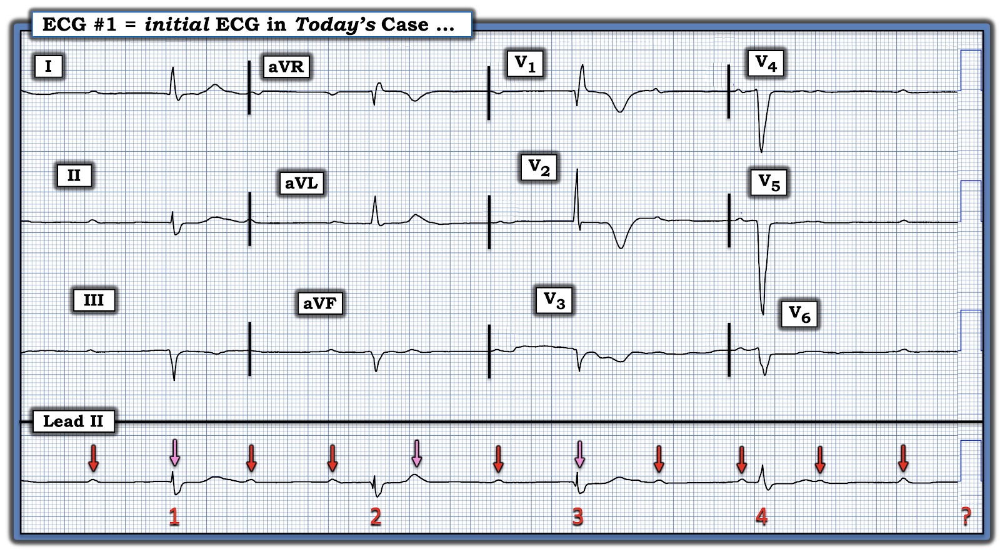
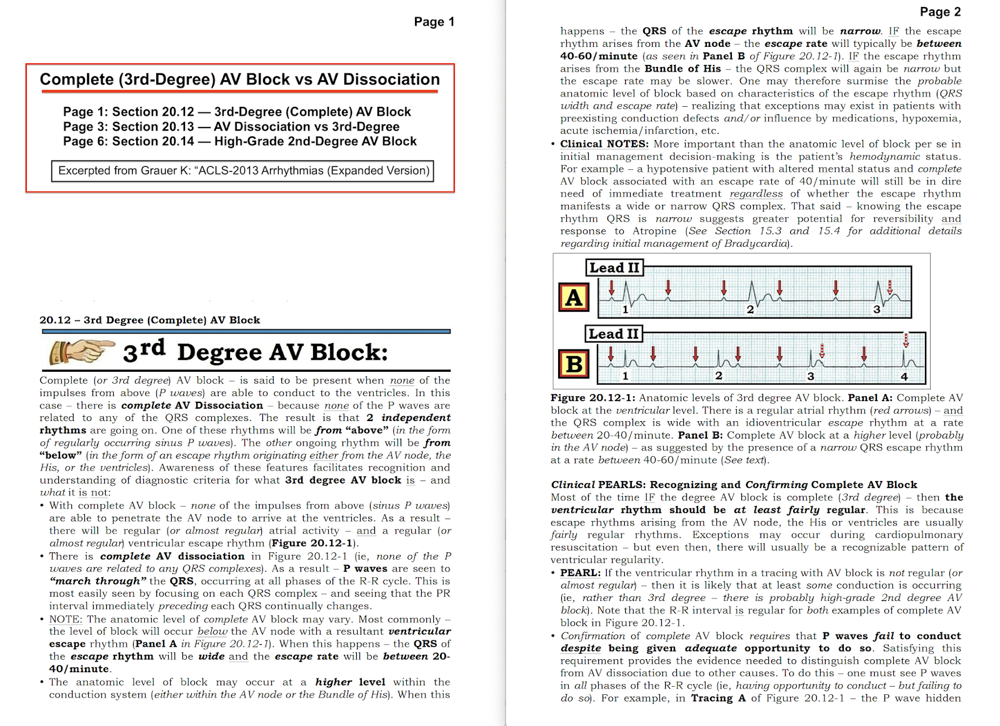

ECG Blog #477 — Một hay cả hai là blốc AV độ 3?
Hãy so sánh 2 bản ghi này.
- Một hay cả hai bản ghi là blốc AV độ 3 (hoàn toàn)?
- Nếu không — Tại sao không?


=======================================
Hãy lần lượt xem từng nhịp một — bắt đầu với Nhịp B:
Nhịp B (mà tôi đã trình bày lại ở Hình-2):
Như mọi khi — tôi ưa dùng cách tiếp cận Ps, Qs, 3R để đánh giá các rối loạn nhịp, vì tôi thấy đây là cách tiết kiệm thời gian nhất để thu hẹp chẩn đoán phân biệt các rối loạn nhịp (Xem ECG Blog #185):
- LƯU Ý #1: Chuyển đạo MCL-1 là một chuyển đạo theo dõi bên phải (cho hình ảnh tương đương với những gì ta thường thấy ở chuyển đạo V1 bên phải trên điện tâm đồ 12 chuyển đạo).
- LƯU Ý #2: Thứ tự bạn đánh giá Ps, Qs, 3Rs không quan trọng. Tôi thường thay đổi trình tự tùy theo thông số nào dễ đánh giá nhất trên bản ghi mà tôi đang xem.
- LƯU Ý #3: Nếu bạn có chút thời gian (tức là, nếu bệnh nhân trước mặt bạn không sắp ngừng tim) — thì dùng compa đo (calipers) sẽ tiết kiệm thời gian cho bạn (và tăng độ chính xác) khi đọc các nhịp khó.


Áp dụng Ps, Qs, 3Rs cho Nhịp B:
- Sóng P có hiện diện. Ta thấy số sóng P nhiều hơn hẳn số phức bộ QRS (ở Hình-3 tôi đã đánh dấu bằng mũi tên ĐỎ những sóng P mà ta thấy rõ).
- Phức bộ QRS rộng ( = 0.15 giây). Tôi thấy cách dễ nhất để đo thời gian QRS là chọn một phức bộ bắt đầu hoặc kết thúc trên một đường kẻ đậm của lưới điện tâm đồ (Ở Hình-3 — nhát #1 kết thúc trên một đường kẻ đậm).
Và — 3Rs (tức là, Nhịp có Regular (đều) không? — Rate (tần số)? — và sóng P có Related (liên quan) với các phức bộ QRS kế cận không?):
- Khoảng R-R ở Hình-2 đều (Regular) — và dài dưới 8 ô lớn một chút (và 300 ÷ một số nhỏ hơn 8 một chút = tần số (Rate) hơi thấp hơn 40/phút).
Sóng P có liên quan (Related) với các phức bộ QRS kế cận không?
- Hãy nhìn khoảng PR đứng trước mỗi QRS ở Hình-3. Chẳng phải khoảng PR liên tục thay đổi sao?


CÂU HỎI:
Nhịp nhĩ ở Hình-3 có đều không?
- Với sự đều đặn của các mũi tên ĐỎ mà ta có thấy ở Hình-3 — Chẳng phải hợp lý hơn nếu phần còn lại của nhịp nhĩ nền cũng đều, thay vì đột nhiên rớt mất vài sóng P?
- ĐIỂM THEN CHỐT (PEARL) #1: Hãy dùng compa đo để trả lời Câu hỏi trên! (Xem các mũi tên HỒNG ở Hình-4).


============================
TRẢ LỜI:
Dù không thể chứng minh được từ bản ghi ngắn một chuyển đạo mà ta thấy ở Hình-4 — việc nhịp nhĩ nền là đều thì hợp lý hơn nhiều (thay vì phải giả định sự khởi phát đột ngột và không đoán trước của một kiểu blốc SA từng lúc bất thường nào đó).
- Đặt compa đo theo khoảng P-P giữa 2 mũi tên ĐỎ liên tiếp bất kỳ ở Hình-4 — cho phép ta dự đoán vị trí có thể có của các sóng P xoang đúng lúc nền ( = các mũi tên HỒNG ở Hình-4).
- ĐIỂM THEN CHỐT #2: Như đã trình bày ở ECG Blog #344 — ở bệnh nhân blốc AV độ 2 hoặc độ 3, thường gặp sự dao động nhẹ của khoảng P-P của các sóng P xoang nền. Sự dao động nhẹ về tần số của sóng P xoang này được gọi là loạn nhịp xoang "theo pha thất" (ventriculophasic) — và dễ dàng được tính đến khi giả định vị trí có thể có của các sóng P xoang "đúng lúc" bị ẩn.
Tổng Hợp Lại Tất cả cho Bản ghi B:
Nhịp ở Bản ghi B là blốc AV độ 3 (hoàn toàn) (3rd-Degree AV Block).
- ĐIỂM THEN CHỐT #3: Blốc AV hoàn toàn (hay độ 3) — được coi là có mặt khi không xung động xoang đúng lúc nào từ trên xuống có thể dẫn truyền xuống thất mặc dù đã có cơ hội thích đáng để làm điều đó.
- Điểm MẤU CHỐT: Chính yêu cầu cuối cùng này (tức là, cần có "cơ hội thích đáng" để dẫn truyền) — là điều rất hay bị bỏ qua. Có thể có phân ly nhĩ thất, với không sóng P đúng lúc nào trong đoạn nhịp ngắn mà bạn đang xem dẫn truyền được — nhưng trừ khi tần số thất đủ chậm (thường dưới 55-60/phút) — và trừ khi thời gian theo dõi đủ dài — thì có thể là thời gian theo dõi chưa đủ để chứng minh rằng mức độ blốc AV là hoàn toàn.
Tôi minh họa chi tiết hơn khái niệm trên ở ECG Blog #191 (trong đó tôi cũng điểm lại 3 loại phân ly nhĩ thất, mà blốc AV chỉ là một trong các loại đó). Còn lúc này, "Điều cần nhớ" là Bản ghi B của ca hôm nay đúng là có blốc AV độ 3 (hoàn toàn). Hãy lưu ý các đặc điểm sau của nhịp này ở Hình-5:
- Nhịp thất chậm, đều — và có phức bộ QRS rộng.
- Nhịp nhĩ đều (các mũi tên ĐỎ — chỉ cho thấy dao động nhẹ của khoảng R-R, phù hợp với loạn nhịp xoang theo pha thất).
- Có phân ly nhĩ thất hoàn toàn — vì không sóng P xoang đúng lúc nào liên quan với các phức bộ QRS kế cận (tức là, khoảng PR đứng trước mỗi phức bộ QRS liên tục thay đổi).
- Không chỉ là phân ly nhĩ thất, mà còn có blốc AV hoàn toàn — vì các sóng P xoang đúng lúc xuất hiện ở mọi điểm trong khoảng R-R, và không dẫn truyền được mặc dù đã có quá đủ cơ hội để làm điều đó.
- Tầng blốc AV này nằm dưới nút AV (và do đó nhịp xuất phát từ thất) — vì có tần số thoát tự thất chậm (tức là, QRS giãn rộng — và tần số "thoát" chỉ dưới 40/phút).


=======================================
=======================================
Còn Bản ghi A của ca hôm nay thì sao? (được trình bày lại ở Hình-6):


Ấn tượng ban đầu của tôi về Bản ghi A:
Điện tâm đồ 12 chuyển đạo ở Bản ghi A rõ ràng là bất thường. Sóng T đảo ngược rõ rệt ở chuyển đạo V1,V2 là không thể bỏ qua!
- Nhịp cực kỳ chậm.
- Chỉ nhìn 2 nhát cuối (xuất hiện ở các chuyển đạo ghi đồng thời V1,V2,V3 — và ở V4,V5,V6) — ban đầu tôi không thể phân biệt nhát nào có thể là trên thất (tức là, dẫn truyền kiểu RBBB ở chuyển đạo V1?) — hay thất (tạo ra các phức bộ QS rộng ở V4,V5,V6?).
- LƯU Ý #4: Để hoàn tất phần diễn giải — rõ ràng tôi cần xác định nhát nào trong 4 nhát của bản ghi này là thất hay trên thất (và liệu có nhát nào trong 4 nhát này được dẫn truyền không?).
- LƯU Ý #5: Khi tôi chuyển sự chú ý sang nhịp — cũng rõ ràng là cần phải dùng compa đo.
============================
Áp dụng Ps, Qs, 3Rs cho Nhịp A:
- Phức bộ QRS có vẻ rộng (khoảng 3 ô nhỏ = 0.12 giây).
- Như đã nêu — tần số (Rate) rất chậm (chỉ nhỉnh hơn 30/phút — đến mức ta chỉ thấy 4 nhát). Khoảng R-R có vẻ bằng nhau giữa 3 nhát đầu — nhưng nhát #4 có vẻ đến sớm (Hình thái QRS của nhát #4 cũng có vẻ khác với 3 nhát đầu).
- Sóng P có hiện diện. Tuy vậy — chỉ nhìn đơn thuần vào nhịp thì khó nói được tần số nhĩ có đều (hay không).
- Về việc sóng P có liên quan (Related) với các phức bộ QRS kế cận không? — Ta cần nhìn phía trước mỗi phức bộ trong 4 phức bộ QRS. Chắc chắn là khoảng PR đứng trước mỗi nhát trong 4 nhát ở dải nhịp chuyển đạo II dài đều khác nhau.
Nhận định
ban đầu của tôi về Nhịp A:
Tôi không chắc chắn về căn nguyên của nhịp này.
- Thú nhận: Ngay cả sau khi đã có RẤT NHIỀU thời gian để suy ngẫm về Nhịp A — tôi vẫn không chắc chuyện gì đang xảy ra. Rõ ràng — có một dạng blốc tim nặng nào đó. Nhiều khả năng sẽ cần tạo nhịp trừ khi nhanh chóng tìm ra điều gì đó "sửa được". Tuy vậy — phải thừa nhận là tôi có nhiều câu hỏi hơn câu trả lời về nhịp này.
Xem kỹ hơn ...
- Nhát #4 có đến sớm không? Để trả lời câu hỏi này — tôi đã đo cẩn thận từng khoảng R-R trên dải nhịp chuyển đạo II dài (Xem Hình-7).


TRẢ LỜI: Nhát #4 rõ ràng có đến sớm.
- ĐIỂM THEN CHỐT #4: Phần lớn trường hợp khi có blốc AV đáng kể — manh mối TỐT NHẤT cho thấy một nhát có thể được dẫn truyền là nhát đó đến sớm hơn dự kiến. Vì vậy — tôi tự hỏi liệu nhát #4 có thể được dẫn truyền bởi sóng P xuất hiện ngay trước nhát này không?
- LƯU Ý #6: Điều quan trọng là nhận ra rằng ta không biết khoảng ngưng trước nhát #1 dài bao lâu — cũng không biết nhát #5 xuất hiện khi nào (hay liệu nhát #5 có xuất hiện hay không?).
CÂU HỎI tiếp theo:
- Sóng P ở Nhịp A có đều không?
Ở Hình-8 — tôi trình bày nỗ lực của mình để trả lời câu hỏi này ...


============================
TRẢ LỜI: Cũng như ĐIỂM THEN CHỐT #1 mà ta đã áp dụng khi giải Nhịp B — dùng compa đo giúp dễ dàng (và nhanh chóng) dự đoán vị trí mà các sóng P khác có thể đang ẩn.
- Các mũi tên HỒNG ở Hình-9 gợi ý những "chỗ ẩn" hợp lý cho 3 sóng P bị thiếu ở Nhịp A. Do đó, nhiều khả năng nhịp nhĩ là đều — và 2 trong số các sóng P xoang đúng lúc bị ẩn trong phức bộ QRS của nhát #1 và 3, còn sóng P thứ 3 giải thích cho việc sóng T của nhát #2 hơi tăng thể tích.


Tổng Hợp Lại Tất cả cho Bản ghi A:
Tôi thừa nhận là không chắc chắn về căn nguyên của Nhịp A.
- ĐIỂM THEN CHỐT #5: Dù lời thừa nhận rằng tôi không chắc chắn về cách diễn giải Nhịp A có thể gây thất vọng — nhưng lời thừa nhận này chứa một bài học quan trọng: Không phải lúc nào căn nguyên của mọi nhịp cũng hiện rõ chỉ từ một đoạn theo dõi ngắn duy nhất (tức là, ta chỉ thấy 4 nhát ở Nhịp A — nên việc ta chưa thể nắm được chuyện gì đang xảy ra là điều dễ hiểu).
- Nhận thức rằng cần thêm thông tin (tức là, một thời gian theo dõi dài hơn) — là một khái niệm quan trọng mà ta cần quen dần.
Những gì ta CÓ BIẾT về Nhịp A:
Dù nói vậy — ta có biết khá nhiều về Nhịp A:
- Ít nhất — có vẻ có blốc AV độ 2 mức độ cao ở Nhịp A, với tần số "thoát" rất chậm (chỉ nhỉnh hơn 30/phút).
- Nhát #4 đến sớm và có hình thái QRS khác so với 3 nhát đầu. Theo ĐIỂM THEN CHỐT #4 — việc nhát #4 xuất hiện sớm hơn dự kiến thường gợi ý rằng nhát này có thể được dẫn truyền. Tuy vậy — có 2 dấu hiệu ở Nhịp A chống lại khả năng nhát #4 được dẫn truyền. Các dấu hiệu đó là: i) khoảng PR đứng trước nhát #4 trên dải nhịp chuyển đạo II dài trông ngắn hơn một cách đáng ngạc nhiên so với mức tôi nghĩ có thể dẫn truyền được, xét đến mức độ nặng của blốc AV như ở các chỗ khác; và, ii) hình thái QRS của nhát #4 ở các chuyển đạo ghi đồng thời V4,V5,V6 trông giống nhát thất hơn nhiều so với nhát được dẫn truyền (tức là, các phức bộ QS rộng).
- NHƯNG — không sóng P nào trước nhát #4 có vẻ có liên quan gì với các phức bộ QRS kế cận.
ĐIỀU CỐT LÕI cho Bản ghi A:
Liệu nhát #4 được dẫn truyền — hay thay vào đó là blốc AV hoàn toàn với một nhát "thoát" hơi sớm từ một ổ thất khác dưới dạng nhát #4 — thì không thể thấy rõ từ bản ghi duy nhất này. Điều đã biết:
- Có ít nhất blốc AV độ 2 mức độ cao với tần số "thoát" rất chậm. Vì vậy — sẽ cần tạo nhịp trừ khi tìm được căn nguyên "sửa được" nào đó cho tần số chậm này.
- Dù rộng — hình thái QRS của 3 nhát đầu trông như xuất phát từ đâu đó trong hệ thống dẫn truyền (có lẽ từ bó His — với dẫn truyền kiểu RBBB dựa trên dạng QR dương ưu thế ở chuyển đạo V1).
- Sóng Q sâu ở chuyển đạo V1 — và sóng T đảo ngược rất sâu ở các chuyển đạo trước gợi ý rằng nhồi máu thành trước vào một thời điểm nào đó trong thời gian gần đây có thể là nguyên nhân gây blốc AV nặng.
- Cần thêm thông tin (và một thời gian theo dõi dài hơn) mới có thể nói thêm.
==================================
Lời cảm ơn: Xin cảm ơn Adem Ahmed (từ Nouakchott, Mauritania) đã cung cấp ca bệnh và bản ghi này.
==================================
==============================
Các bài liên quan ECG Blog bổ sung cho ca hôm nay:
- ECG Blog #185 — Sử dụng cách tiếp cận hệ thống để đọc nhịp.
- ECG Blog #191 — Blốc AV có hoàn toàn không? (Đánh giá phân ly nhĩ thất).
Các bài khác về đánh giá blốc AV:
— LƯU Ý: Trên Blog này còn nhiều ca khác liên quan đến đánh giá blốc AV, nhưng các bài dưới đây cung cấp phần “thực hành” cho những ai muốn tìm một số ca ví dụ.
- ECG Blog #164 — Về Mobitz I.
- ECG Blog #187 — Một dạng Wenckebach nào đó.
- ECG Blog #189 — Wenckebach hai tầng.
- ECG Blog #192 — Phân ly nhĩ thất do mặc định (so với do chiếm quyền).
- ECG Blog #62 — Blốc AV 2:1: Mobitz I hay II?
- ECG Blog #61 — Blốc AV do cường phế vị.
- ECG Blog #58 — Phân ly nhĩ thất “do mặc định”.
- ECG Blog #66 — Nhịp theo nhóm không do Wenckebach.
- ECG Blog #154 — Nhịp theo nhóm kèm nhồi máu cơ tim cấp thành dưới.

PHẦN BỔ SUNG:
- Dưới đây là đoạn trích 7 trang từ cuốn sách ACLS-2013 Arrhythmias (Expanded Version) của tôi, trong đó tôi điểm lại sự phân biệt giữa phân ly nhĩ thất và blốc AV hoàn toàn.

Hôm nay: ECG Media PEARL #19a (6:45 phút Audio) — Tại sao đây không phải là blốc AV hoàn toàn? Bản ghi âm này gợi ý vài việc cần làm nhanh giúp xác định có hay loại trừ blốc AV hoàn toàn (T.B. (P.S.) — tôi đã cập nhật Audio Pearl này vào ngày 12/10/2021).

ECG Media Pearl #8 (8:20 phút Video) — ECG Blog #191 — Phân biệt giữa Phân ly nhĩ thất và blốc AV hoàn toàn (6/2/2021).

ECG Media Pearl #9 (5:40 phút Video) — ECG Blog #192 — Điểm lại 3 nguyên nhân gây phân ly nhĩ thất (9/2/2021).

